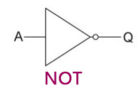

| Gate | Symbol | Text Symbol | Rule | Example |
|---|---|---|---|---|
| NOT |  | ¬ | Opposite of input | If input is 1, output is 0 |
| AND | ∧ | Both inputs must be 1 | Like a bank vault - need BOTH keys | |
| OR | ∨ | At least one input is 1 | Like having two friends who can drive |
| Word Expression | Symbol Expression |
|---|---|
| (x AND y) OR (NOT c) | (x ∧ y) ∨ (¬c) |
| NOT (a OR b) | ¬(a ∨ b) |
| (p AND q) AND (NOT r) | (p ∧ q) ∧ (¬r) |
| Input A | Output |
|---|---|
| 0 | 1 |
| 1 | 0 |
| Input A | Input B | Output |
|---|---|---|
| 0 | 0 | 0 |
| 0 | 1 | 0 |
| 1 | 0 | 0 |
| 1 | 1 | 1 |
| Input A | Input B | Output |
|---|---|---|
| 0 | 0 | 0 |
| 0 | 1 | 1 |
| 1 | 0 | 1 |
| 1 | 1 | 1 |
| Programming | Boolean Logic | Example |
|---|---|---|
AND |
AND gate | age >= 18 AND hasLicense |
OR |
OR gate | isWeekend OR isHoliday |
NOT or ! |
NOT gate | NOT raining or !raining |